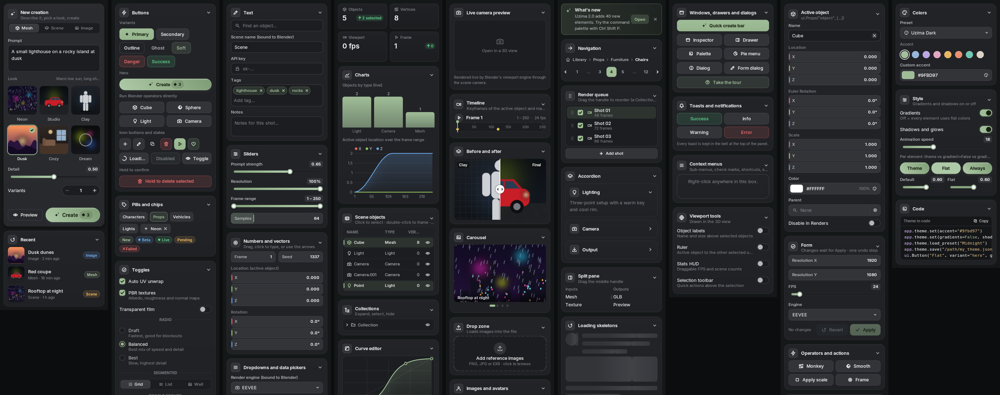
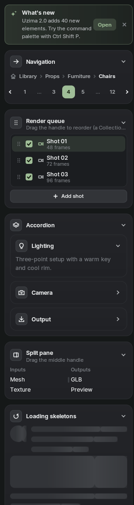
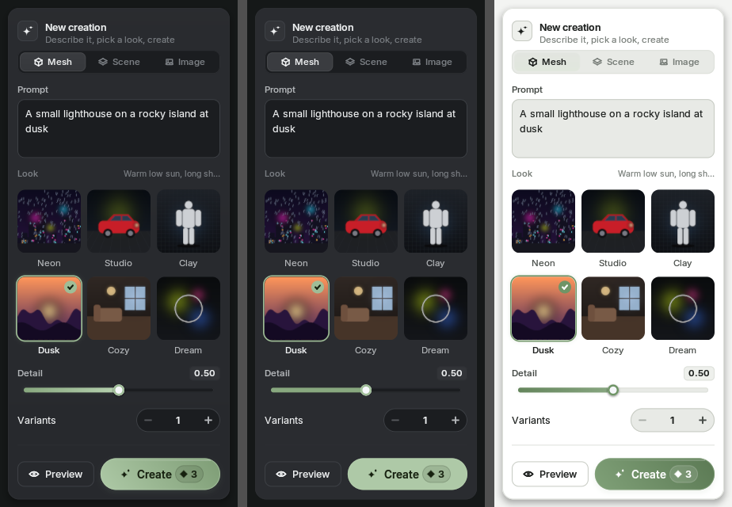
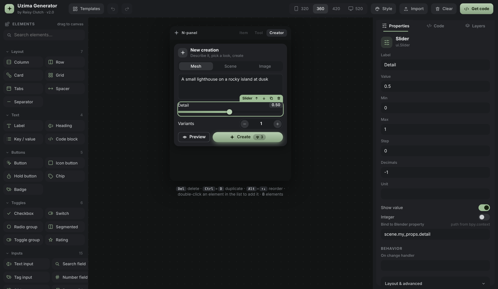

A custom GPU-drawn, web-style interface library for the N-panel and the 3D viewport. Cards, charts, color pickers, curve editors, command palette and more, all wired to real Blender data.
Uzima UI is a custom-drawn, web-style user interface library for Blender 5 (it also runs on 4.2 and newer).
Every pixel is drawn with Blender's own gpu module: rounded cards, soft shadows, optional gradients,
animated controls and a bundled Inter font. Because nothing is a stock Blender widget, you can build panels that look like a modern web app,
inside the N-panel and floating above the 3D viewport.
It is not only about looks. Every value widget binds to a real Blender property with undo, buttons and menus run operators,
actions get real keymap entries, pickers select real objects and materials, and the curve and color-ramp editors edit real node data.
The Uzima demo in the N-panel: side navigation rail, cards, preview enum, slider, stepper and a hero button.
60+elements, from buttons to curve editors
0dependencies. Pure Python and gpu
1 foldercopy uzima/ into any add-on
You can use it three ways:
Demo add-on. Install the zip and explore every element on nine pages.
Library. Copy the uzima folder into your own add-on and build panels with Python.
Generator. Design a panel by drag and drop in your browser and copy the generated Python.
Requirements
Blender
5.0 or newer is the target. Works from 4.2 (extension platform).
Python
The Python that ships with Blender. No pip packages.
GPU
Any GPU Blender supports (OpenGL, Vulkan, Metal). Uses GPUShaderCreateInfo.
Operating system
Windows, macOS and Linux.
License
The demo is GPL-3.0-or-later (required for Blender add-ons). The bundled Inter font is under the SIL Open Font License.
Install the demo
Open Preferences. In Blender go to Edit > Preferences > Get Extensions.
Install from disk. Open the small arrow menu at the top right and choose Install from Disk…, then pick uzima_ui_demo-2.0.0.zip. Dragging the zip into Blender works too.
Open the panel. In the 3D viewport press N and click the Uzima tab.
Explore. Use the icon rail on the left to switch pages: Create, Controls, Inputs, Data, Media, Layout, Overlays, Blender, Theme.
Tip
Press CtrlShiftP for the command palette and CtrlShiftQ for the pie menu. You can rebind both on the Inputs page.

All nine demo pages side by side.
Quick start
Copy the uzima folder into your add-on, so your package looks like this:
import bpy
from . import uzima as ui
app = ui.App("my_addon") # a unique id keeps names from clashing with other add-ons
@app.action("add_lamp", label="Add lamp", icon="light", hotkey="ctrl+shift+L")
def add_lamp(context):
bpy.ops.object.light_add(type="POINT")
def build(surface):
return ui.Column(
ui.Heading("My tool", "Built with Uzima UI"),
ui.Prop("scene.render.engine"),
ui.Slider("Exposure", min=-5, max=5, bind="scene.view_settings.exposure"),
ui.Button("Add lamp", icon="light", action="add_lamp"),
ui.Button("Add cube", icon="cube", operator="mesh.primitive_cube_add", props={"size": 2}),
)
app.sidebar("My Tool", build=build) # a tab in the N-panel
app.viewport() # lets windows, dialogs and toasts draw over the 3D view
def register():
app.register()
def unregister():
app.unregister()
That is a complete add-on. Enable it, press N and open the My Tool tab.
Note
build(surface) runs the first time the tab is drawn. Call surface.rebuild() to build it again, for example after the scene changes.
How it works
Blender does not let add-ons put custom widgets into the sidebar, so Uzima reserves the space and draws everything itself.
A hidden panel reserves the tab.app.sidebar("My Tool") registers a real Blender Panel with no header. Its height is set to your layout's height, so the sidebar scrolls normally.
A draw handler paints the UI. A POST_PIXEL handler draws the widget tree into that region with one SDF (signed distance field) shader.
A modal operator receives input. A small "pump" operator watches mouse and keyboard over the region and gives events to the widgets. Events no widget wants are passed through, so Blender's own shortcuts keep working.
A timer keeps it alive. A watchdog restarts the pump if Blender cancels it and drives animations.
The widget tree
You build a tree of widget objects. Each frame has three steps: measure (how big do you want to be?), arrange (here is your rectangle) and paint (draw yourself). You rarely touch these unless you write a custom widget.
Units
All sizes are in dp (unscaled pixels). The painter multiplies them by Blender's UI scale, so panels stay crisp and the same size on every monitor.
Surfaces
A Surface is one place the UI draws. app.sidebar() makes a surface in the N-panel. app.viewport() makes a surface that covers the 3D viewport and holds windows, dialogs, drawers, toasts, the command palette and the pie menu. Both are optional.
App and surfaces
Every add-on creates one App. It owns your surfaces, theme, actions and keymap entries.
App
Creates the application object. The id must be unique per add-on and should be a valid Python identifier.
App(id, theme=None, cursors=False)
Argument
Default
What it does
id
—
Short name used for panel, operator and keymap names, e.g. "my_addon".
theme
default
A ui.Theme. Pass your own to change colors from the start.
cursors
False
False keeps Blender's arrow everywhere. True switches to a hand over buttons and an I-beam over text fields.
App.sidebar
Adds a tab to the N-panel. Give it either build (a function returning a widget) or root (a ready widget).
build(surface) returns the root widget. Called lazily on first draw.
space
"VIEW_3D"
Which editor to attach to, for example "IMAGE_EDITOR" or "NODE_EDITOR".
padding
12
Inner padding of the tab.
App.viewport
Adds the overlay surface to the main viewport region. Needed for app.window, app.dialog, app.toast, app.drawer, app.command_palette, app.pie, app.tour and the viewport tools. Pass build to also draw a permanent widget over the viewport.
Call from your add-on's register() and unregister(). Register your own PropertyGroups first, because widgets may bind to them. Both calls are safe to run repeatedly, so disable and enable works.
Open a floating popover next to a widget or at a point.
surface.close_popover()
—
Close any open popover.
surface.window(content, ...)
—
Open a floating window on this surface (same as app.window).
surface.dialog(title, message)
—
Open a dialog.
surface.toast(title, message, kind, duration)
—
Show a toast.
Binding to Blender
A bind connects a widget to a value. Widgets read the value every frame, so they update when something else changes it (the Properties editor, Python, undo). When the user edits the widget, Uzima writes the property and pushes an undo step.
Property paths
The simplest form is a string path that starts from bpy.context:
python
ui.Slider("Samples", min=1, max=4096, integer=True, bind="scene.eevee.taa_render_samples")
ui.Switch("Transparent", bind="scene.render.film_transparent")
ui.Dropdown(bind="scene.render.engine") # enum items come from Blender
ui.NumberField("Frame", bind="scene.frame_current")
ui.VectorField("Location", bind="object.location") # arrays bind as a whole
ui.ColorField("Color", bind="object.color")
When the active object changes, the widget rebinds itself, so object.location always follows the active object.
Bind and FuncBind
Bind
Explicit binding. owner is an object or a function returning one (called each frame).
ui.Bind(owner, attr, index=None, undo=True)
Argument
Default
What it does
owner
—
A Blender struct, or lambda: some_object.
attr
—
Property name.
index
None
Element of an array property.
undo
True
Push an undo step when the user changes the value.
Prop looks at the Blender property and picks the matching widget, like layout.prop in standard Blender UI.
Argument
Default
What it does
bool
—
Switch
bool array / flag enum
—
ToggleGroup
enum
—
Dropdown
float / int vector
—
VectorField (rotation in degrees)
color
—
ColorField (scene-linear handled)
float / int
—
Slider or NumberField
string path
—
FilePathField
pointer to ID
—
DataPicker
python
ui.Prop("object.location")
ui.Prop("scene.render.engine", label="Engine")
ui.Prop("object.scale", style="knob")
# a whole group of properties:
ui.Props("scene.render", ["engine", "resolution_x", "resolution_y"], title="Output", card=True)
ui.Props("scene.my_props") # every property of your own PropertyGroup
Prop
One property. target is a path ("object.location") or a Bind.
ui.Prop(target, attr=None, index=None, label=None, style=None, empty="Nothing to edit")
Argument
Default
What it does
style
None
Force a widget: slider, field, knob, switch, checkbox, dropdown, segmented.
empty
"Nothing to edit"
Text shown when the owner does not exist (for example, no active object).
Binding to a property that does not exist raises no error while drawing. The widget shows an empty state instead. Check the Info editor if a widget stays blank.
Actions and hotkeys
An action is a named command. Uzima turns each action into a real Blender operator (<app_id>.uzima_action) and, if you give it a hotkey, a real keymap item. Actions show up in the command palette and can be rebound by the user.
python
@app.action("create", label="Create", icon="sparkle", hotkey="ctrl+shift+C",
description="Generate something new")
def create(context):
bpy.ops.mesh.primitive_ico_sphere_add()
app.toast("Created", "A new ico sphere", kind="success")
# Run it from a button, a menu item, the palette or code:
ui.Button("Create", variant="hero", action="create")
app.run_action("create")
app.action
Register an action. Use it as a decorator or pass fn. The function receives context, or (context, info) when it needs the area and mouse position (to open a pie menu at the cursor).
A string like "ctrl+shift+P", "alt+F" or "shift+ctrl+alt+X".
keymap
"3D View"
Blender keymap name the hotkey lives in.
space
"VIEW_3D"
Space type of that keymap.
Argument
Default
What it does
app.run_action(name, info=None)
—
Run an action by name.
app.set_hotkey(name, combo)
—
Change a hotkey at runtime. Blender's keymap updates immediately.
app.hotkey_of(name)
—
Current hotkey string.
ui.HotkeyField(action=...)
—
A widget where the user presses a key combination to rebind an action.
Run Blender operators
python
ui.Button("Cube", icon="cube", operator="mesh.primitive_cube_add", props={"size": 2})
ui.MenuItem("Shade smooth", operator="object.shade_smooth")
# from your own callbacks, with a valid area context:
ui.run_operator("mesh.primitive_monkey_add", size=1.5)
ui.run_operator("object.delete", invoke=True) # INVOKE_DEFAULT (may show a popup)
run_operator finds a suitable area first, so operators that need a 3D viewport work from a sidebar button.
Layout is automatic. Column stacks children top to bottom, Row places them side by side, and everything stretches to the available width.
Sizing rules
Argument
Default
What it does
Default
—
Children of a Row share the width equally (flex=1).
<code>flex=2</code>
—
This child gets twice the share of the others.
<code>width=120</code>
—
A fixed width in dp.
<code>width="auto"</code>
—
The child keeps its natural size, and the flexible children share what is left.
<code>align="start"</code>
—
Inside a Column the child does not stretch.
python
ui.Row(
ui.Button("Preview", icon="eye", variant="outline", width="auto"), # natural size
ui.Button("Create", variant="hero", cost=3), # takes the rest
gap=8,
)
ui.Grid(*[ui.Chip(n) for n in names], cols=3) # 3 equal columns
ui.Grid(*cards, min_cell=96) # as many columns as fit
ui.Flow(*[ui.Chip(t, removable=True) for t in tags]) # wraps like text
Tip
A Column inside the N-panel grows to its content and the sidebar scrolls. Use ScrollView (or a Scaffold with a pinned footer) when you want a fixed-height region.
Layout containers
Containers place other widgets. Every widget also accepts the common arguments.
A swatch and hex text. Clicking opens the full picker with a saturation square, hue and alpha bars, hex input, an eyedropper and recent colors. Scene-linear properties are converted for you.
Press-a-key widget that rebinds an action's hotkey.
ui.HotkeyField(action, ...)
PreviewGrid / PreviewDropdown
Enums with thumbnails, like the "Look" picker in the demo. images maps each item to a file path, a bpy.types.Image, an ImagePreview from bpy.utils.previews or a GPUTexture.
A live render of the scene through the active camera or the current view, drawn in the panel with Blender's viewport engine. Refresh rate is capped by fps.
A dashed upload target. Blender panels cannot receive files dragged from outside the app, so clicking opens the file browser and on_files gets the chosen paths.
ui.DropZone(on_files=None, label="Add reference images", hint="PNG, JPG or EXR · click to browse", filter="*.png;*.jpg;*.jpeg;*.exr;*.tif;*.webp", multiple=True, icon="upload", height=96)
Navigation

The Layout page: navigation, accordion, split pane and skeleton loaders.
Breadcrumbs
A path like Library / Props / Chairs. on_click gets the clicked index.
A radial menu around the pointer. Items are MenuItems, up to eight (order: left, right, bottom, top, then the four corners). Release the key or click an item to choose. Open it from an action so info carries the mouse position.
Name tags above objects. which is "selected" or "all". text is a function of the object.
ui.Ruler()
—
Click two points to measure distance in scene units.
ui.HUD(anchor="top_left")
—
Draggable FPS and scene statistics panel.
ui.SelectionToolbar(items=None)
—
A floating toolbar above the selection with quick actions.
python
hud = ui.HUD()
app.viewport_tool(hud, True) # show
app.viewport_tool(ui.ObjectLabels("all"), True)
Theme and colors
Every color is a public attribute of ui.Theme. Change one and the UI repaints on the next frame. Colors can be "#rrggbb", "#rrggbbaa" or an (r, g, b[, a]) tuple of floats from 0 to 1.

Left: default look with gradients and shadows. Middle: flat. Right: the Light preset.
python
app = ui.App("my_addon", theme=ui.Theme(accent="#7c5cff")) # at creation
app.theme.set(accent="#e8b25a") # live. hover / glow / focus shades are derived
app.theme.set(accent="#e8b25a", accent_text="#1a1200") # override any derived color
app.theme.set(bg="#0e1012", surface_1="#171a1d", r_md=12)
app.theme.load_preset("Midnight") # "Uzima Dark", "Midnight", "Sand", "Light"
app.theme.save("/path/my_theme.json") # share your theme
app.theme.load("/path/my_theme.json")
app.theme.reset()
Everywhere a color is accepted you can also use a theme color name (ui.Label("Note", color="accent")), and it will follow the theme when it changes.
Color slot
Default
Used for
bg
#151818
Region background
surface_0
#1b1d20
Fields, tracks, sunken areas
surface_1
#202125
Cards, tab bar
surface_2
#27292d
Raised cards, popovers, windows
surface_3
#323438
Buttons, chips
surface_4
#3a3c40
Hover
selected
#36383c
Selected row or tab
overlay
#000000 55%
Dialog backdrop
text
#eef0f1
Main text
text_dim
#b4b7ba
Secondary text
text_muted
#7a7e83
Hints and captions
text_disabled
#55585c
Disabled text
accent
#9fbd97
Brand color (sage green)
accent_hi
#b6d0af
Accent hover / highlight
accent_lo
#88a87f
Accent shadow side of gradients
accent_edge
#5e7a57
Accent outline
accent_text
#16200f
Text on accent fills
accent_soft
accent 14%
Soft tinted backgrounds
border / border_strong / border_focus
Hairlines and the focus ring
info / success / warning / danger
#6aa8e8 / #5cc98a / #e8b25a / #ec6a6a
Semantic colors
Tip
The Theme page of the demo has a live accent picker, presets and switches for gradients and shadows. Try it to see how the library reacts.
Gradients and shadows
The default look uses subtle gradients on accent fills and soft shadows under floating things. Both are optional, globally or per widget.
python
app.theme.set(gradients=False) # every element is flat
app.theme.set(shadows=False) # no drop shadows or glows
ui.Button("Flat", variant="hero", gradient=False) # only this widget
ui.Card(..., shadows=False)
ui.Button("Always glowing", variant="hero", gradient=True, shadows=True) # force it even if the theme is flat
Argument
Default
What it does
gradient=None
—
Follow the theme (default).
gradient=False
—
Flat fill, whatever the theme says.
gradient=True
—
Gradient, whatever the theme says.
The same three states exist for shadows. Functional shading, such as the hue bar of the color picker, always stays on because it carries information.
Fonts
Uzima bundles Inter (Regular, Medium, SemiBold, Bold). Code blocks use Blender's DejaVu Sans Mono. Fonts are registered by weight name: regular, medium, semibold, bold, mono.
python
import os
FONTS = os.path.join(os.path.dirname(__file__), "fonts")
ui.load_font("regular", os.path.join(FONTS, "Poppins-Regular.ttf"))
ui.load_font("bold", os.path.join(FONTS, "Poppins-Bold.ttf"))
ui.load_font("display", os.path.join(FONTS, "Fraunces.ttf")) # any name you like
ui.Label("Hello", weight="display")
Note
Blender discards fonts when a .blend is loaded. Uzima reloads them for you after every file load, so text never disappears. You do not need to do anything.
Icons
Icons are vector shapes drawn on a 24 × 24 grid by the SDF painter, so they stay sharp at any size. Use them by name: icon="sparkle".
Button pressed. Return True to capture the pointer for dragging.
on_drag / on_release
—
While captured.
on_click / on_double_click / on_right_click
—
Completed gestures.
on_wheel
—
Scroll.
on_key
—
Key pressed while focused.
on_nav
—
Arrow key navigation.
on_focus / on_blur
—
Keyboard focus changes.
Tip
Use self.get_state() and self.set_state(...) together with a key= to save custom state in the .blend.
Keyboard and saved state
Hover the panel and press Tab to move between controls (ShiftTab back). Enter or Space presses the focused control, arrow keys change sliders, knobs, choices and pages, and Esc leaves. Blender's own shortcuts keep working everywhere else.
Any widget with a key= (tabs, cards, side nav, tree...) restores its state from the .blend file. Uzima stores it in a scene custom property named uzima_ui_state.
python
ui.Card(..., title="Render", collapsible=True, key="card_render") # open / closed is remembered
ui.SideNav(pages, key="main_nav") # selected page is remembered
Packaging your add-on
Blender 4.2 and newer use extensions. Add a blender_manifest.toml next to your __init__.py:
blender_manifest.toml
schema_version = "1.0.0"
id = "my_addon"
version = "1.0.0"
name = "My Addon"
tagline = "Short description"
maintainer = "Your Name"
type = "add-on"
blender_version_min = "4.2.0"
license = ["SPDX:GPL-3.0-or-later"]
copyright = ["2026 Your Name", "2016-2024 The Inter Project Authors (Inter font, OFL-1.1)"]
[build]
paths_exclude_pattern = ["__pycache__/", "*.zip"]
Then run blender --command extension build in the add-on folder, or zip the folder yourself. Keep uzima/fonts/OFL.txt in the package, because the Inter license requires it.
Heads up
Blender add-ons that import bpy must be GPL-compatible. Uzima UI itself is meant to be used inside add-ons, so ship your add-on under the GPL.
Recipe: object inspector
python
def build(surface):
has_obj = lambda: bpy.context.object is not None
return ui.Column(
ui.Label(lambda: bpy.context.object.name if bpy.context.object else "No active object", weight="semibold"),
ui.EmptyState("Nothing selected", "Click an object in the viewport.", icon="cube",
visible=lambda: not has_obj()),
ui.Column(
ui.TabView([
ui.Tab("Transform", ui.Column(
ui.Prop("object.location"), ui.Prop("object.rotation_euler"), ui.Prop("object.scale")), icon="cube"),
ui.Tab("Look", ui.Column(
ui.Prop("object.color"), ui.Prop("object.hide_render")), icon="palette"),
], key="inspector_tabs"),
ui.Row(
ui.Button("Smooth", icon="sphere", operator="object.shade_smooth"),
ui.HoldButton("Delete", on_confirm=lambda: ui.run_operator("object.delete")),
),
visible=has_obj,
),
)
The Uzima Generator is a visual designer that runs in your browser. You build the panel by dragging elements onto a live preview, edit their properties, and copy the Python it writes.

The Generator: element list on the left, live N-panel preview in the middle, properties on the right.
Drag an element from the left list onto the canvas. A line shows where it will land. Drop onto a Card, Row, Column, Grid or Tabs to put it inside.
Click an element to edit its properties on the right: text, icon, variant, ranges, bindings and behavior.
Reorder by dragging elements around the canvas, or use Alt + ↑ / ↓. Del deletes and Ctrl + D duplicates.
Style the preview with the Style button: pick an accent color and switch gradients and shadows on or off, as the library does.
Get code. Open the Code tab. Add-on is a full __init__.py, build() is only the layout function, and JSON is the layout you can save and re-import later.
Argument
Default
What it does
Bind to Blender property
—
Type a path such as scene.render.resolution_x. The generator writes bind="...".
Run action / Run operator
—
Writes action="name" (and a @app.action stub) or operator="mesh.primitive_cube_add".
Handlers
—
Writes on_click=my_function and an empty def my_function(...) stub for you to fill in.
Visible / Enabled when
—
Python expressions that become lambda: ....
Layout & advanced
—
Flex, fixed width and height, per-widget gradient and shadow overrides, state key.
Tip
Everything is saved in your browser automatically. Use Templates to start from a ready layout, and Import / JSON to move designs between machines.
Troubleshooting
Problem
Fix
The tab appears but is empty.
Check the Info editor and system console for a Python error inside build(). Errors in build stop the tree from being created.
Windows, dialogs or toasts do not show.
Add app.viewport() and make sure the 3D viewport is visible. Overlays draw on that surface.
A widget stays blank.
Its bind path may be wrong or the owner is missing (no active object). Use visible= or show an EmptyState.
Text vanished after opening a file.
Update to Uzima 2.0 or newer. Fonts are reloaded after every file load.
Colors look washed out in the viewport.
Uzima converts colors automatically for the viewport. If you use your own shader, set surface.linear_output = True on viewport surfaces.
Hotkey does nothing.
Another add-on or Blender uses it. Choose another or rebind with app.set_hotkey. Hotkeys work with the pointer over the matching editor.
Preview thumbnails are dark.
Use files or bpy.types.Image. Non-color images need Image.colorspace_settings.name = "sRGB".
Can't type Chinese, Japanese or Korean.
IME composition is not supported in Uzima text fields.
Dragging files in from the desktop does nothing.
Blender does not deliver external drops to panels. DropZone opens the file browser instead.
FAQ
Can I use Uzima UI in a commercial add-on?
Yes, if your add-on follows Blender's GPL requirement. The Inter font stays under the SIL OFL, which allows bundling with attribution.
Does it replace Blender's own panels?
No. It adds a tab to the N-panel (or an overlay). You can use Blender's Properties editor next to it. Uzima widgets read and write the same properties.
Does it slow Blender down?
Drawing is batched into a few GPU calls. When nothing animates, Uzima only redraws on demand, and a slow timer keeps idle cost near zero.
Can two add-ons use Uzima at once?
Yes. Each add-on bundles its own copy and creates its own App with a unique id, so panels, operators and keymaps never collide.
Which editors work?
The 3D viewport sidebar and overlay are tested most. space= accepts other editors, such as the Image or Node editor. The image editor and 3D view get automatic linear-color handling.
Can it run in the Properties editor or in popups?
Not at the moment. Uzima draws in sidebars (UI regions) and as an overlay in main windows.
Changelog
2.0.0
60+ elements: color picker, vector field, curve editor, color ramp, charts, table, tree, preview enums, live camera preview, before and after, carousel, command palette, pie menu, drawer, tour, notification bell.
Real Blender integration: Prop, Props, Form, actions with keymap items, file browser, object and color pickers, operator buttons, saved UI state, keyboard navigation.
Optional gradients and shadows, globally and per widget. Theme presets and JSON themes.